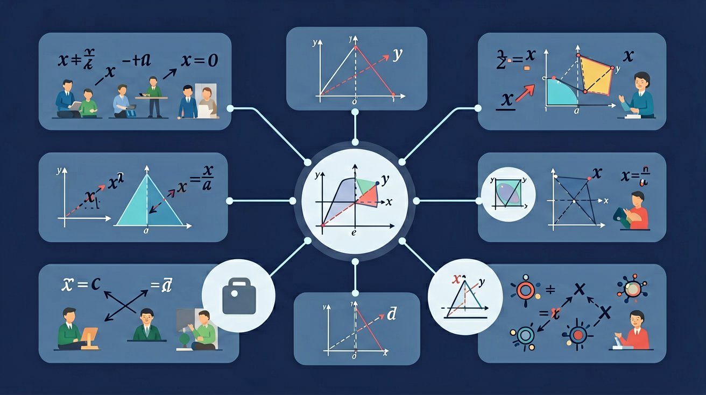

🎯 能说出实数的分类及典型代表数
🎯 能判断给定数属于有理数或无理数
🎯 能分析科学记数法中指数与小数点移动的关系
❓ 为什么0.999...等于1却看起来不一样？
❓ 无理数为什么叫'无理'，它们不讲道理吗？
❓ 科学记数法的小数点到底往左还是往右移？
学完这一课，这些问题你都能自信地回答。
下列哪个数是无理数？
36000用科学记数法表示是？
古希腊数学家毕达哥拉斯相信"万物皆有理数"。他们认为，任何两段线的长度之比都可以用整数之比表示。
一个正方形，边长为1，对角线是多少？用勾股定理：对角线² = 1² + 1² = 2，所以对角线 = √2。但是 √2 = ? 它不等于任何分数！
√2 是一种新类型的数——无理数。它的小数展开是无限且不循环的：√2 ≈ 1.41421356…
有理数：可以写成分数 p/q（整数比）→ 小数展开是有限小数或无限循环小数
无理数：不能写成分数形式 → 小数展开是无限不循环小数
| 数 | 小数形式 | 类型 |
|---|---|---|
| 1/3 | 0.333…（循环） | 有理数 |
| 1/4 | 0.25（有限） | 有理数 |
| √2 | 1.41421356…（不循环） | 无理数 |
| π | 3.14159265…（不循环） | 无理数 |
| √9 | 3（整数） | 有理数 |
哪些是无理数？
有理数和无理数合在一起，构成了实数（Real Numbers，ℝ）。实数对应数轴上的每一个点，与数轴上的点一一对应。
圆的周长 C = 2πr（含π，无理数）；正方形对角线 = 边长 × √2；黄金比例 ≈ 1.618（无理数）；音乐中的十二平均律使用了 2的12次方根（无理数）
实数的运算法则和有理数相同（加减乘除），但比较大小时，对于含根号的数，需要用估算或化简的方法。
√(a²) ≠ a！正确结论是 √(a²) = |a|
对以下每个数进行分类，然后完成计算：
数集：0, -3, √2, 3/7, π, √9, -√5, 0.5, √0, 1.414...（不循环）
把这10个数分为有理数和无理数两组
将所有数从小到大排列（用≈估算无理数的位置）
计算：√((-5)²) = ?，√81 = ?，（√3）² = ?
判断：6与2√10的大小（提示：对两数都平方比较）
传说毕达哥拉斯的学生希帕索斯发现√2是无理数后，被扔进海里！因为这颠覆了"万物皆有理数"的信念
π=3.14159265358979...已经被计算到100兆位，至今没有发现循环规律
高中将学习复数（包含虚数单位i，满足i²=-1），数的体系进一步扩展到"复数"
科学记数法用a×10ⁿ（1≤a<10，n为整数）表示极大或极小数。例如光速3×10⁸米/秒，新冠病毒直径约1×10⁻⁷米。在化学中，阿伏伽德罗常数6.02×10²³/mol表示1摩尔物质的粒子数。天文学中，地球到太阳距离1.496×10⁸公里。当学生计算银河系恒星数量（约10¹¹颗）时，用科学记数法比写100,000,000,000更高效。手机处理器7纳米工艺即7×10⁻⁹米，这种表达在纳米技术中至关重要。